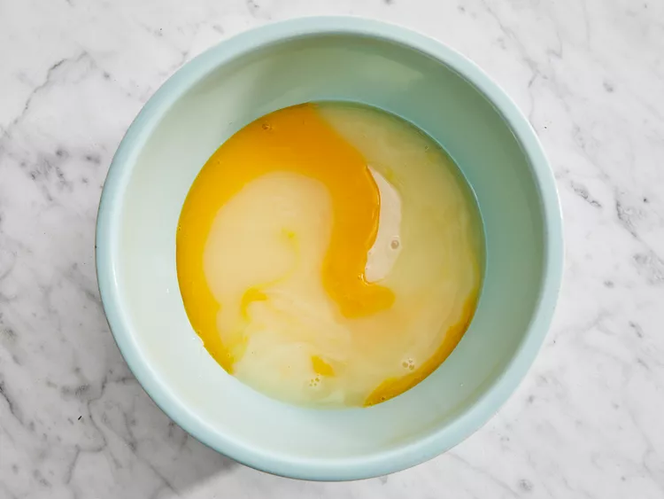
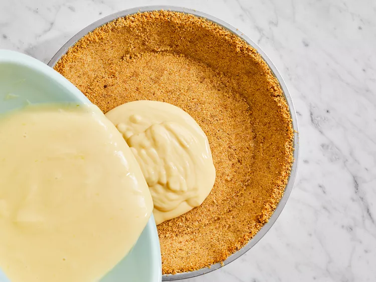

Hướng dẫn
- Làm nóng lò ở nhiệt độ 375 độ F (190 độ C).
- Trộn sữa đặc có đường, nước cốt chanh và lòng đỏ trứng trong một cái bát lớn; trộn đều. 
- Đổ hỗn hợp vào vỏ bánh quy graham chưa nướng. 
-
Nướng trong lò đã được làm nóng trước cho đến khi nhân đông lại,
khoảng 15 phút.